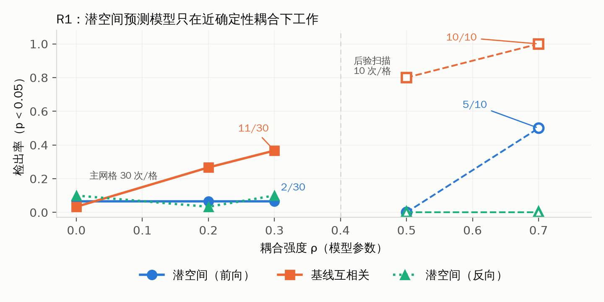
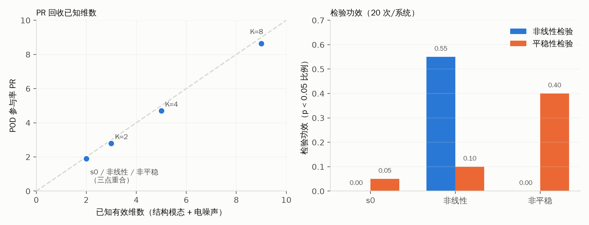

从 R1 负结果到“先测有效复杂度、再定模型”的可执行协议 · 2026-11-14
自下而上：分子马达 → 写微分方程 → 模拟整个网络 → 预测电极信号。多尺度、参数不可辨识、化学/流体黑盒；在 9 皿、48 h 的数据量下几乎不可行。
自上而下：降维（找特征）→ 增维（补隐状态）→ 还原（验证演化）。这个方向值得做，但原表述有三处必须改写：
问题：在 S0 数字孪生里给定已知的结构 → 电活动耦合（强度 rho、滞后 600 s），延迟嵌入 + DMDc/ARX 能否回收检出、方向、滞后、强度？对照 = S0 现有 max-|r| 互相关。
设计（预注册）：48 h、fs 1 Hz、10 s 帧；AM 信号 f0 = 0.03 Hz；tau_s = 2 h、tau_e = 0.5 h；rho ∈ {0, 0.2, 0.3}，30 次/格；10 µV 带内 1/f、1 mV/h 漂移、10 kΩ 源、ADC 1 SPS/PGA 8；结构观测噪声 0.3。潜空间：log Hilbert 包络（0.02–0.05 Hz）+ 结构观测；L = 60 帧（10 min）延迟嵌入；前向/反向 ARX；前 70% 训练、后 30% 测试；统计量 = 样本外 R² 增益；50 相位随机化代理；alpha = 0.05。干净对照与 rho = 0.5/0.7 为后验诊断。
| 条件 | rho | 潜空间前向 | 基线互相关 | 潜空间滞后（中位/回收） | 基线滞后（中位/回收） | 基线方向 |
|---|---|---|---|---|---|---|
| 噪声主网格 | 0.0 | 2/30 | 1/30 | — | — | — |
| 噪声主网格 | 0.2 | 2/30 | 8/30 | 305 s / 0%* | 565 s / 50% | 5/8 |
| 噪声主网格 | 0.3 | 2/30 | 11/30 | 175 s / 0%* | 600 s / 91% | 11/11 |
| 后验扫描（10 次） | 0.5 | 0/10 | 8/10 | — | 595 s / 100% | 8/8 |
| 后验扫描（10 次） | 0.7 | 5/10 | 10/10 | 430 s / 40% | 600 s / 100% | 10/10 |
| 干净 + 阳性对照 | 1.0 | 30/30 | 30/30 | 590 s / 100% | 600 s / 100% | 30/30 |

在 10 s 采样、tau_s = 2 h 的过采样条件下，e(t) 已经包含 s(t−600 s)，而 s(t−590 s) 与 s(t−600 s) 的相关是 exp(−10/7200)=0.9986。潜空间模型问的是“在已知 e 自身历史的情况下，s 历史还能不能提升 e 的预测”——这是一个条件独立问题；真实耦合是“e 和 s 在 600 s 滞后处有没有相关”——这是一个匹配滤波/互相关问题。两者不是同一个统计量。rho = 0.3 时，滞后 600 s 的边际相关约 0.33，互相关能看见；条件增益只有 ~10⁻⁴。
更深一层：增维不创造信息（数据处理不等式）。延迟坐标补的是表示/记忆，不是被电极平均掉的状态；在线性高斯真值下，匹配滤波/互相关已经是最优，通用潜空间预测模型没有可赢的空间。R1 的干净 rho = 1 阳性对照 30/30、滞后 590 s、r = 0.999，证明实现正确；失败在灵敏度，不在代码。
目标：在定模型之前，测清楚四个数：有效维数（需要几个独立模态）、非线性（线性耦合够不够）、平稳性（48 h 内参数是否漂移）、有效样本量（数据最多支持几个参数）。E1 在 6 类已知真值的合成系统上校准这些估计量（48 h、10 s 帧、20 seeds/系统）。
| 系统 | 已知模态 | 已知总维数 | POD PR | CCA 秩 | N_eff | 非线性功效 | 平稳性功效 |
|---|---|---|---|---|---|---|---|
| s0（线性、平稳） | 1 | 2 | 1.90 | 0 | 15.6 | 0.00 | 0.05 |
| K=2 线性 | 2 | 3 | 2.79 | 1 | 21.4 | — | — |
| K=4 线性 | 4 | 5 | 4.70 | 1 | 19.0 | — | — |
| K=8 线性 | 8 | 9 | 8.64 | 3 | 17.9 | — | — |
| 非线性 | 1 | 2 | 1.89 | 1 | 18.3 | 0.55 | 0.10 |
| 非平稳（0 → 0.6） | 1 | 2 | 1.90 | 0 | 19.3 | 0.00 | 0.40 |

| L1 | 2–4 参数滞后线性 e(t) = a + b·g(t−τ) + noise |
PR ≤ 2；非线性 p ≥ 0.05；平稳性 p ≥ 0.05；N_eff ≥ 10 | 主模型。先拟合 b、τ；跨皿不变性；用代理检验 b ≠ 0。 |
| L2 | 多模态线性 2–5 个几何模态，各自增益/滞后 |
PR 3–5 或 CCA 秩 ≥ 2；L1 残差有结构 | 只在 L1 被拒绝时；每加一个模态必须买到样本外增益。 |
| L3 | 非线性耦合 二次/饱和/阈值函数 |
非线性 p < 0.05，且样本外 ΔR² ≥ 预注册阈值 | 先静态滞后二次；动态非线性（SINDy/多项式 ARX）只在 L3 被证实后。 |
| L4 | Regime-switching 分段/时变参数 |
平稳性 p < 0.05，且分段模型样本外优于全局 | 窗口数、change-point 预注册；避免把噪声当 regime。 |
| L5 | 潜状态空间 / SINDy 延迟嵌入 + 稀疏辨识 |
L1–L4 均被拒绝，且潜空间在匹配假阳性率下优于直接检测器 | 只作解释/发现问题，不作主检测器；必须有独立锚。 |
L2–L5 不是路线图，而是“L1 被数据拒绝后才启用”的备选；每一级都要在预注册的样本外/干预指标上赢过上一级，否则退回。
| 工具 | 回答什么问题 | 怎么用 | 坑 |
|---|---|---|---|
| POD / SSA | 数据里有几个独立模态？总方差维数？ | SVD；PR、90/95% 能量；对几何图像做 POD 模 | 1/f 噪声抬高谱；单看奇异值阈值会高估/低估；用跨皿分布 |
| CCA | 电活动与几何之间有几个可辨识的共享模态？ | 电块延迟嵌入 × 几何块；典型相关；代理阈值 | 单电极饱和；样本少时过拟合；只作可观测性诊断 |
| 延迟嵌入 / Takens | 能否用单变量历史重构动力学？ | Hankel 矩阵；嵌入维/延迟；SSA | 随机/非平稳破严格前提；补表示不补信息 |
| ARX / DMDc | 带输入/滞后的线性预测；耦合增益 | e(t+1) ~ e 历史 + s 历史；样本外 R²；DMDc 加控制输入 | 过采样/共线使滞后不可辨识；预测增益不是耦合检测 |
| DMD / Koopman | 观测空间中的线性演化算子 | Hankel-DMD；optimized DMD；特征值/模态 | 有限字典近似；噪声产生伪特征值；只到坐标变换 |
| SINDy | 稀疏非线性动力学方程 | 延迟坐标 + 多项式/物理库；稀疏回归；积分形式 | 导数噪声；库选择；可辨识性只到坐标变换 |
| 工具 | 回答什么问题 | 怎么用 | 坑 |
|---|---|---|---|
| 非线性 ARX | 静态/低阶非线性耦合 | 在滞后 k 处加 s²、s³；样本外 R² + 代理 | 多重比较；条件在 e 历史上会吸收非线性 |
| 状态空间 / Kalman | 带测量模型的潜状态；不确定性 | 线性高斯 SSM；参数 = 耦合/滞后/噪声 | 参数数 vs N_eff；不可观隐变量不可辨识 |
| CCM / 转移熵 / Granger | 方向性：谁领先谁？ | 交叉映射；滞后互相关；条件 Granger | 预测 ≠ 因果；必须配扰动实验；CCM 对非线性更合适 |
| 代理检验 | 观测到的统计量是否超过零模型？ | 相位随机化（平稳线性）、块 bootstrap（慢/驱动）、IAAFT（非线性） | 零模型选错会假阳性；块长要长于相关时间、短于驱动周期 |
| BIC / AIC / MDL | 模型复杂度是否值得？ | BIC = n ln(SSE/n) + k ln n；样本外似然；MDL | BIC 选预测记忆，不给物理滞后；参数多时惩罚仍可能不足 |
| Lead-field / 可观测性 | 8 个电极能看见哪些空间模态？ | 电极灵敏度矩阵；零空间；模态可见度 | 需要空间模型；看不见的模态不能靠软件恢复 |
| 测量链 | 噪声/漂移/时基是否支配结论？ | T1/T2/T6；样本号时基；1/f、输入阻抗、漂移 | 主机时间戳不可作时基；DTR/RTS 复位；usbipd 丢样 |
在 T3–T5 台架与首批 9 皿之后，按以下顺序跑；在 E1 结果出来之前不固定模型。
| 指标 | 计算 | 预注册判据 |
|---|---|---|
| 有效维数 PR | 联合 [E, G] 的 SVD；PR + 90/95% 能量 | PR ≤ 2 → L1；3–5 → L2；>5 → 先查 CCA/电极，不直接加模型 |
| 共享模态 CCA 秩 | E（延迟嵌入）× G 的典型相关；代理阈值 | CCA 秩 << PR → 观测瓶颈，先加电极/几何，不加模型 |
| 非线性 | 滞后 k 处线性 vs 二次；代理 p | p < 0.05 且样本外 ΔR² ≥ 预注册阈值 → L3 |
| 平稳性 | 4×12 h 窗口系数；块 bootstrap | p < 0.05 → L4；否则全局模型 |
| N_eff | 最慢 G 模态的积分自相关 | < 10 → 参数 ≤ 2–3；延长记录或增强扰动 |
| BIC 阶梯 | ARX(p,q) 线性/二次；最低 BIC | 只作预测记忆诊断；滞后由互相关/CCM 给出 |
| 产物 | 路径 / 说明 |
|---|---|
| R1 方法笔记（1 页） | notes/physarum-r1-latent-method-2026-11-14.md |
| R1 代码 | physarum-lab/sim/r1_latent_recovery.py |
| R1 证据 | sim/results/r1_latent_recovery/、r1_clean_control/、_r1_pilot_rho05_07/ |
| E1 代码 | physarum-lab/sim/e1_effective_complexity.py |
| E1 证据 | sim/results/e1_effective_complexity/（JSON/CSV/图/摘要/SHA256SUMS） |
| 本文 PDF | physarum-lab/docs/modeling-methods-tools-2026-11-14.pdf |
| 路径 | 内容 |
|---|---|
| sim/truth.py | S0 真值模型：慢结构 OU + 电活动包络 + 延迟耦合 + 驱动低通 |
| sim/instrument.py | 电极/ADC 正向模型：分压、半电池、漂移、1/f、热噪声、量化、工频 |
| sim/pipeline.py | 带通/Hilbert 包络、互相关、相位随机化、块 bootstrap、周期折叠 |
| sim/r1_latent_recovery.py | R1：延迟嵌入 + DMDc/ARX + 代理；对照 S0 互相关 |
| sim/e1_effective_complexity.py | E1：PR、CCA、非线性、平稳性、N_eff、BIC 阶梯；合成校准 + 真实数据协议 |
| sim/results/r1_latent_recovery/ | R1 主网格证据（JSON/CSV/图/摘要/SHA256SUMS） |
| sim/results/e1_effective_complexity/ | E1 校准证据（6 类系统 × 20 seeds） |
cd physarum-lab/sim python3 r1_latent_recovery.py --outdir results/r1_latent_recovery --n-sims 30 --n-surr 50 python3 r1_latent_recovery.py --outdir results/r1_clean_control --n-sims 30 --n-surr 50 --clean --rho-grid 0.0,0.2,0.3,1.0 python3 r1_latent_recovery.py --outdir results/_r1_pilot_rho05_07 --n-sims 10 --n-surr 50 --rho-grid 0.5,0.7 python3 e1_effective_complexity.py --outdir results/e1_effective_complexity --n-sims 20 --n-surr 30